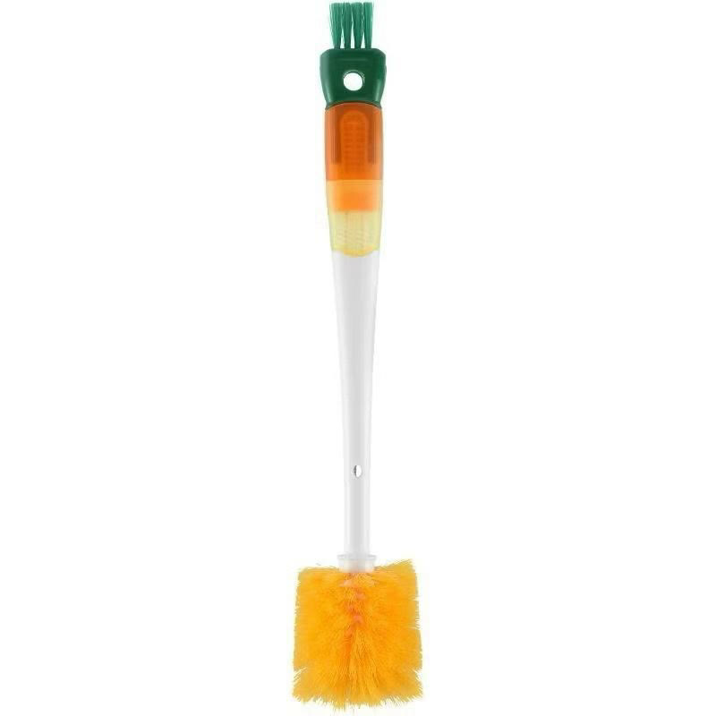
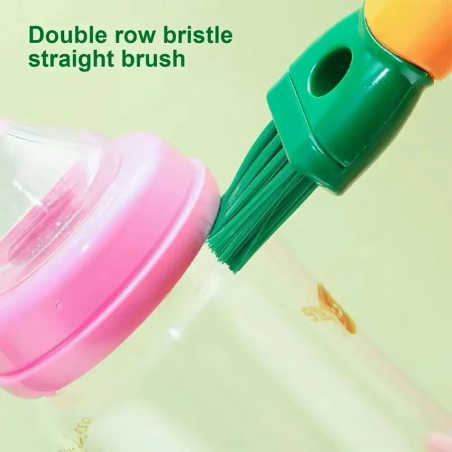
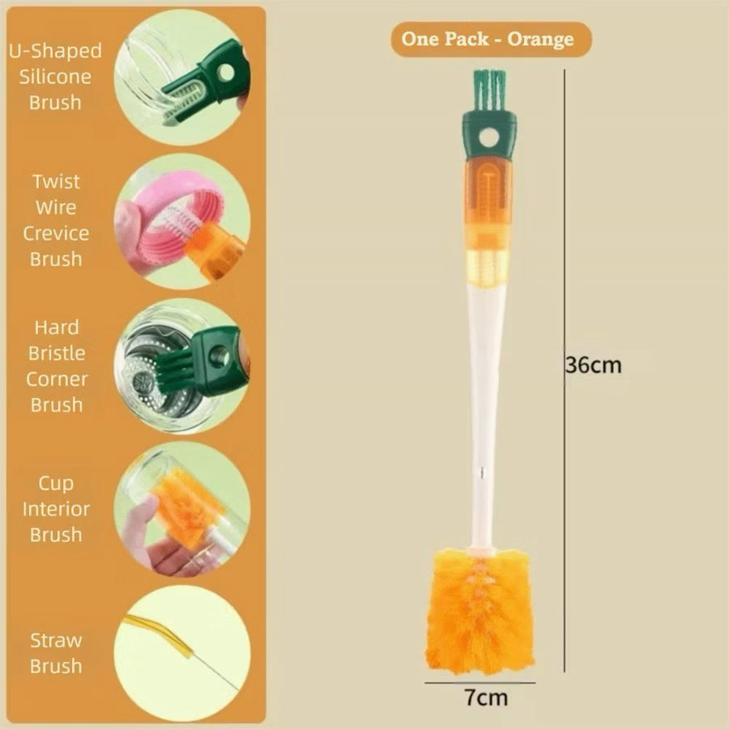
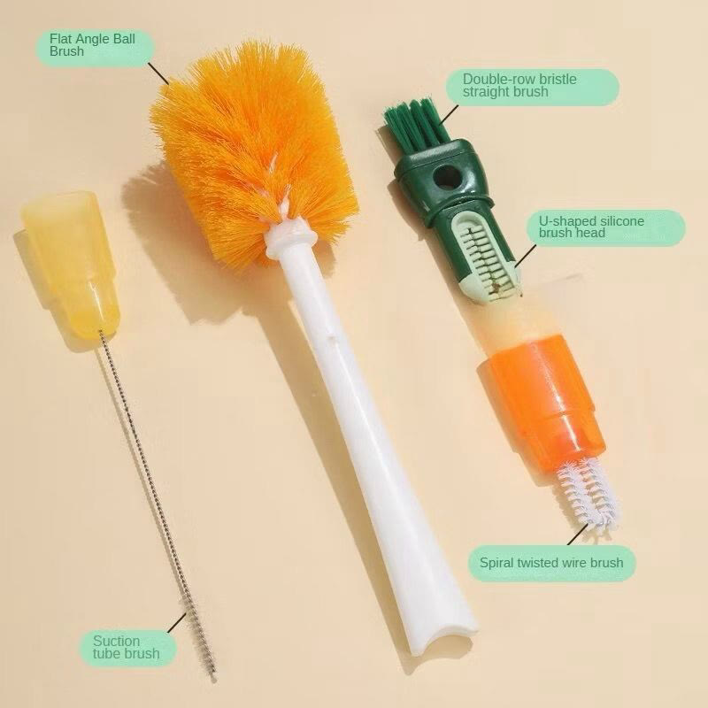
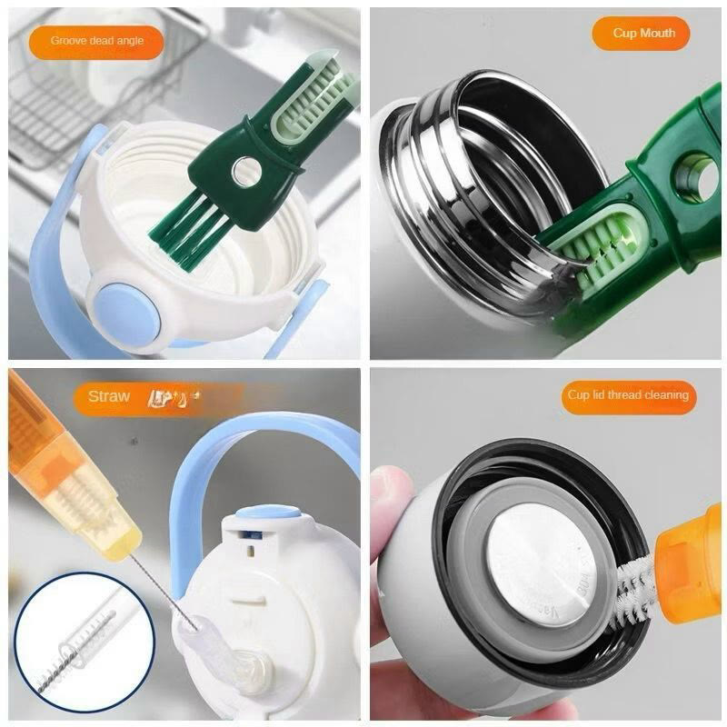
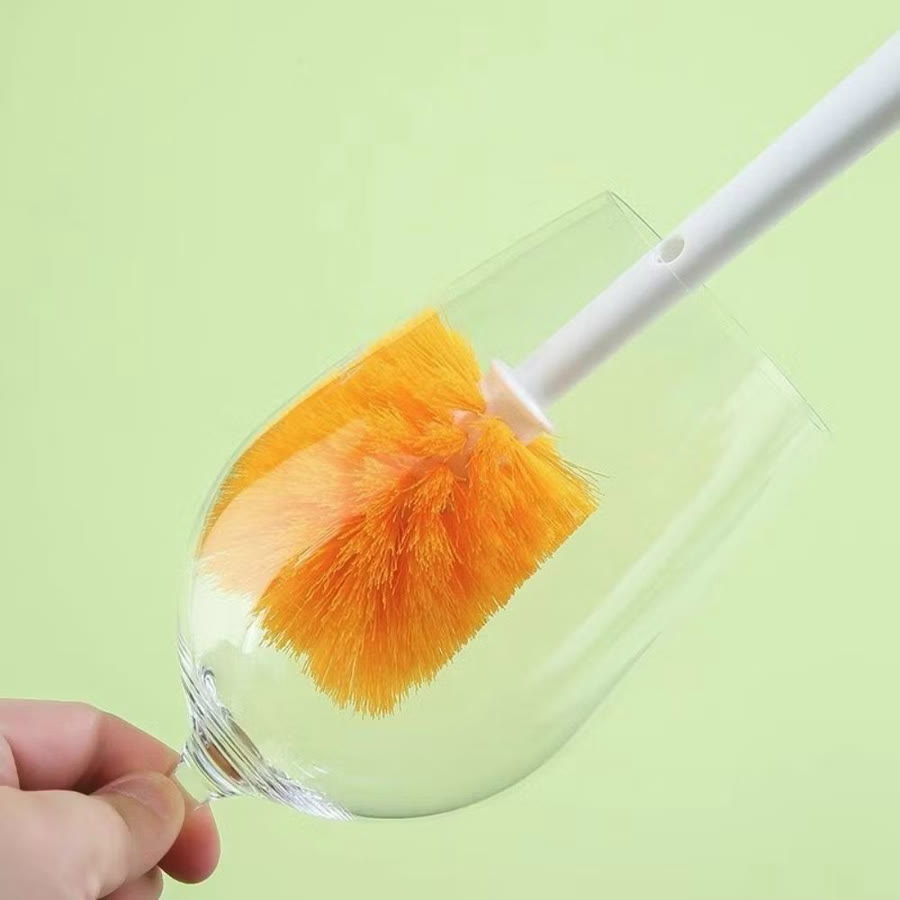
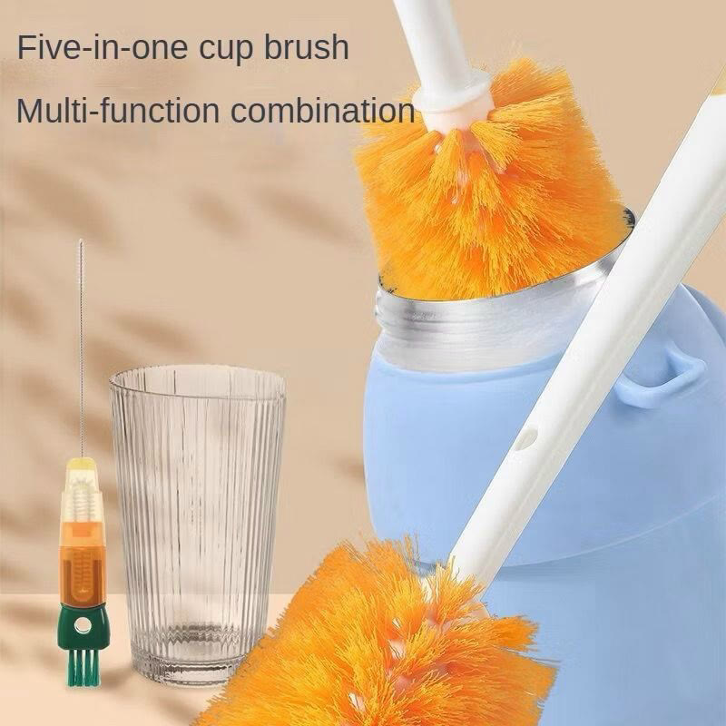

Achado nº 63
Escova 5 em 1 de cabo longo para copos, garrafas e tampas








O que diz a página oficial do produto
- É uma escova de cabo longo com cinco pontas de limpeza: uma escova redonda para o fundo do copo, uma de cerdas duplas, uma em U de silicone, uma de arame para frestas e uma fininha para canudo
- Mede 36 cm de comprimento e 7 cm de largura
- É feita de silicone, nylon, aço inox, ABS, PP e PET
- Segundo o anúncio, serve para parede e boca de copo, frestas da tampa, bico de mamadeira e canudo
- A cor vai conforme o estoque
- Na Shopee, tem nota 4,9 com mais de 7 mil avaliações e mais de 10 mil vendidos
Link de afiliado: se você comprar por ele, a Achadaria pode receber uma comissão, sem custo extra para você. Preço, estoque e entrega são da loja e podem mudar; confira lá antes de comprar.